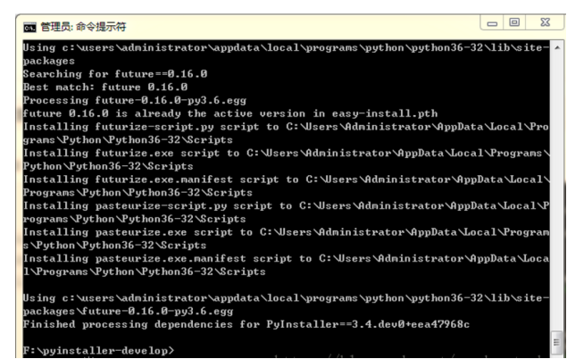

安装方法：
注：python环境一定要配置好。
1.第一步：下载
官方网站：http://www.pyinstaller.org/downloads.html
此处下载版本为稳定版。
2.第二步：下载完成后解压，打开cmd。
例如：我的在F盘根目录下。可更换目录，建议不要有目录不要带有中文。
上图：关键安装命令。下图：安装过程图。
注意命令的空格，下面夸张了下空格间距，每次空格也仅需按一次。
(1)cd F：\pyinstaller-develop\bootlaoder(进入子目录)
python ./waf configure build install（build the bootloader运行）
（2）cd F:\pyinstaller-develop 或 cd .. （回到上一级目录）
（3）python setup.py install

3.第三步：检验安装成果
（1）重新打开cmd
（2）输入命令：pyinstaller
这里已经可以看到输入pyinstaller有相关指令参数，安装已经成功。
最后一行的错误为提示在pyinstaller后加python脚本名。
虽然很简单，但是也给自己鼓个巴巴掌吧~~~